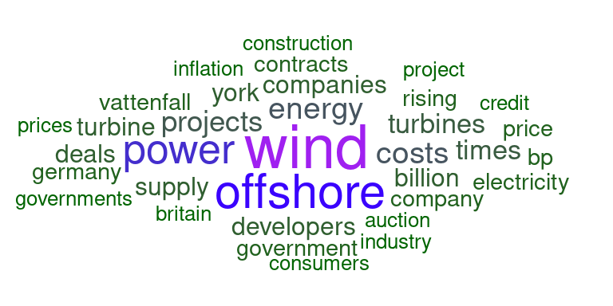

library(dplyr) ### for general tidy data practices
library(tidyr) ### for general tidy data practices
library(readr) ### for reading in data
library(purrr) ### toolkit for working with functions and vectors
library(forcats) ### for working with factors
library(stringr) ### for manipulating strings
library(tidytext) ### to support text analysis using tidy data methods
library(pdftools) ### to extract text data from .pdf documents
library(ggwordcloud) ### to generate a word cloudLearning Objectives
- Understand how to work with text data in R using functions from the
stringrpackage - Apply functions from the
tidytextpackage to prepare text and pdf documents for word frequency analysis - Perform a simple sentiment analysis using stop-word lexicons and sentiment lexicons from the
tidytextpackage
3.1 Overview
Working with natural language text data, for example sentences and paragraphs, is quite different from working with tidy data frames of categorical and continuous variables. However, many packages have been developed to facilitate working with text in \(\textsf{R}\). In this tutorial, we will use the stringr package to detect, extract, and modify strings, and the tidytext package to break documents down into dataframes to make them easy to work with in our familiar tidyverse style.
3.2 Introduction to stringr
The first part of this tutorial will walk through an exercise in extracting specific information from untidily formatted blocks of text, i.e. sentences and paragraphs rather than a nice data frame or .csv.
The example comes from a paper that examined species ranges from different datasets, and found some discrepancies that resulted from systematic errors. Many of the coral species ranges for IUCN rangemaps extended off the continental shelf into very deep waters; but most corals require shallower water and are dependent upon photosynthesis. However, the IUCN also included narrative text about the habitat preferences of each coral species to examine whether these corals, according to the IUCN’s own information, could be found in waters deeper than 200 meters.
3.2.1 Load packages and data
Tip
The stringr package is part of the tidyverse meta-package. When you install tidyverse (e.g., install.packages('tidyverse')) the stringr package is installed with our other favorites like dplyr, ggplot2, and readr. When you attach the tidyverse package, stringr is automatically attached as well, so we don’t have to explicitly call library(stringr) - but because it is essential for the purposes of this tutorial, we’ll make it explicit anyway.
The data are narratives pulled from the IUCN API (http://apiv3.iucnredlist.org/) for coral species, in order to identify their maximum depth. We’ll also pull up a set of data on species areas, but mostly just because that data includes scientific names for the corals so we can refer to species rather than ID numbers.
coral_narrs <- read_csv('data/iucn_narratives.csv')
### interested in species_id, habitat
coral_info <- read_csv('data/coral_spp_info.csv')
### info for species mapped in both datasets
### create a dataframe with just ID, scientific name, and habitat
coral_habs_raw <- coral_narrs %>%
left_join(coral_info, by = 'iucn_sid') %>%
select(iucn_sid, sciname, habitat)Here is an example of the text for the first species of coral. We can see the depth noted in the text; the challenge will be, how do we convert that into a useful format?
coral_habs_raw$habitat[1]This species occurs in shallow, tropical reef environments. It is found only in subtidal turbid water, attached to wave washed rock. This species is found on subtidal rock and rocky reefs, the back slope, in lagoons, and on inter-reef rubble substrate. It may be found on the foreslope. This species is found to 10 m.
Oulastrea is usually found in muddy areas on the shallow back reef and seldom occurs among dense coral on the fore reef (Wood 1983). It may be more abundant in degraded habitats where other coral species have disappeared, e.g., Jakarta Bay.
In pseudocode, one possible strategy for extracting depth information from these narrative descriptions might be:
coral_habs <- coral_habs_raw %>%
split into individual sentences %>%
keep the sentences with numbers in them %>%
isolate the numbers3.2.2 Intro to stringr functions
Before cracking open the coral text data, here we’ll play a little with some basic stringr functions, and pattern vs. vector of strings. Consider especially how we can use str_split, str_detect, str_replace; later we’ll see how to make effective use of str_extract as well.
x <- "Everybody's got something to hide except for me and my monkey"
### Manipulate string case (upper, lower, sentence, title)
stringr::str_to_title(x)
str_to_lower(x)
### Split strings into multiple pieces, based on some pattern
str_split(x, 'hide'); str_split(x, 't')
### Replace a pattern in a string with a different pattern
str_replace(x, 'except for', 'including')
str_replace(x, ' ', '_')
str_replace_all(x, ' ', '_')
### Detect whether a pattern is found within a string
str_detect(x, 't'); str_detect(x, 'monk') ### is pattern in the string? T/F
### Extract instances of patterns within a string. Note: this is far more
### powerful and interesting when using wildcards in your pattern!
str_extract(x, 't'); str_extract_all(x, 'y')
### Locate the start and endpoint of a pattern within a string
str_locate(x, 't'); str_locate_all(x, 'y')3.2.3 Break coral data into sentences
First we can use stringr::str_split() to break down the habitat column into manageable chunks, i.e. sentences. What is an easily accessible delimiter we can use to separate a paragraph into sentences?
Take 1:
coral_habs <- coral_habs_raw %>%
mutate(hab_cut = str_split(habitat, '.'))
coral_habs$hab_cut[1]Did that behave as expected? In a moment we’ll see that a period is actually a special character we will later use as a wild card in a “regular expression” or “regex” pattern. Some other characters have special uses as well; so if we want them to be interpreted literally, we need to “escape” them.
Some languages use a single backslash to “escape” a character (i.e., turn a character into a special function, e.g. \n indicates a line break, and \. indicates a literal period instead of a regex wildcard). In R stringr functions, usually you end up having to use a double backslash for R to interpret the escape sequence properly (e.g. \\n or \\.).
Also: why is splitting on just a period on its own probably a bad idea? Recall we are looking for numeric data, which might have a decimal point. But in a sentence, a period is usually followed by a space, while a decimal point is usually followed by another number - so we can slightly modify our pattern for splitting.
Take 2:
# coral_habs <- coral_habs_raw %>%
# mutate(hab_cut = str_split(habitat, '\. '))
### Error: '\.' is an unrecognized escape in character string starting "'\."
coral_habs <- coral_habs_raw %>%
mutate(hab_cut = str_split(habitat, '\\. '))
### creates a cell with a vector of broken up sentences!3.2.3.1 Use unnest() to separate out vector into rows
The str_split function leaves the chopped string in a difficult format - a vector within a dataframe cell. unnest() will unpack that vector into individual rows for us.
coral_habs <- coral_habs_raw %>%
mutate(hab_cut = str_split(habitat, '\\. ')) %>%
unnest(hab_cut)Note the number of observations skyrocketed (562 –> 2210! Each paragraph was a single observation (for one coral species); now each species description is separated out into multiple rows, each containing a sentence.
3.2.4 Identify sentences with numbers in them
We can use str_detect() to identify which observations contain a certain pattern, e.g., a number. We can use this in conjunction with filter to keep only those observations that match the pattern.
Without wildcards, we’d have to identify each specific number. This would be annoying. Instead we can use some basic “regular expressions” or “regex” as wild card expressions. We put these in square brackets to create a list of everything we would want to match, e.g. [aeiou] would match any instance of lower case vowels. Ranges of numbers or letters can also be included, e.g., [a-z] is all lower-case letters (without diacritical marks like accents…), [A-Z] is all upper-case letters, [0-9] is all numeric characters. Combinations or subsets work as well: what would [a-f], [A-z], [A-m3-9] match?
Helpful for testing regex: https://regex101.com/
### Without wildcards
coral_habs <- coral_habs_raw %>%
mutate(hab_cut = str_split(habitat, '\\. ')) %>%
unnest(hab_cut) %>%
filter(str_detect(hab_cut, '1') | str_detect(hab_cut, '2'))
### With wildcards
coral_habs <- coral_habs_raw %>%
mutate(hab_cut = str_split(habitat, '\\. ')) %>%
unnest(hab_cut) %>%
filter(str_detect(hab_cut, '[0-9]'))3.2.4.1 But not all numbers are depths
How can we differentiate further to get at depth info?
- exclude years? Knowing a bit about corals, can probably exclude any four-digit numbers as their depth; problems with that?
- match pattern of number followed by ” m” as all depths are given in meters
coral_depth <- coral_habs %>%
filter(str_detect(hab_cut, '[0-9] m')) %>%
mutate(depth = str_extract(hab_cut, '[0-9] m'))Why didn’t that work???? Only matched the single digit next to the “m”!
We need to use a regular expressions quantifier in our pattern:
+means one or more times*means zero or more times?means zero or one time{3}means exactly three times{2,4}means two to four times;{2,}means two or more times
years <- coral_habs %>%
mutate(year = str_extract(hab_cut, '[0-9]{4}'))
### looks for four numbers together
coral_depth <- coral_habs %>%
filter(str_detect(hab_cut, '[0-9] m')) %>%
mutate(depth = str_extract(hab_cut, '[0-9]+ m'))
### looks for one or more numbers, followed by ' m'
### Still misses the ranges e.g. "3-30 m" - how to capture?
### let it also capture "-" in the brackets
coral_depth <- coral_habs %>%
filter(str_detect(hab_cut, '[0-9] m')) %>%
mutate(depth = str_extract(hab_cut, '[0-9-]+ m'))Also can use a “not” operator inside the brackets:
'[^a-z]'matches “anything that is not a lower case letter”- BUT:
'^[a-z]'matches a start of a string, then a lower case letter. - NOTE:
^outside brackets means start of a string, inside brackets means “not”
### split 'em (using the "not" qualifier), convert to numeric, keep the largest
coral_depth <- coral_habs %>%
filter(str_detect(hab_cut, '[0-9] m')) %>%
mutate(depth_char = str_extract(hab_cut, '[0-9-]+ m'),
depth_num = str_split(depth_char, '[^0-9]')) %>%
unnest(depth_num)
coral_depth <- coral_depth %>%
mutate(depth_num = as.numeric(depth_num)) %>%
filter(!is.na(depth_num)) %>%
group_by(iucn_sid, sciname) %>%
mutate(depth_num = max(depth_num),
n = n()) %>%
distinct()Note, still some issues in here: some fields show size e.g. 1 m diameter; other fields have slightly different formatting of depth descriptors; so it’s important to make sure the filters (a) get everything you want and (b) exclude everything you don’t want. We could keep going but we’ll move on for now…
3.2.5 Other examples of stringr functionality
3.2.5.1 start string, end string, and “or” operator
Combining multiple tests using “or”, and adding string start and end characters.
coral_threats <- coral_narrs %>%
select(iucn_sid, threats) %>%
mutate(threats = tolower(threats),
threats_cut = str_split(threats, '\\. ')) %>%
unnest(threats_cut) %>%
filter(str_detect(threats_cut, '^a|s$'))
### NOTE: ^ outside brackets is start of a string, but inside brackets it's a negation3.2.5.2 cleaning up column names in a data frame
Spaces and punctuation in column names can be a hassle, but often when reading in .csvs and Excel files, column names include extra stuff. Use regex and str_replace to get rid of these! (or janitor::clean_names()…)
crappy_colname <- 'Per-capita income ($US) (2015 dollars)'
tolower(crappy_colname) %>%
str_replace_all('[^a-z0-9]+', '_') %>%
str_replace('^_|_$', '') ### in case any crap at the start or end3.2.5.3 Lazy vs. greedy evaluation
When using quantifiers in regex patterns, we need to consider lazy vs. greedy evaluation of quantifiers. “Lazy” will find the shortest piece of a string that matches the pattern (gives up at its first opportunity); “greedy” will match the largest piece of a string that matches the pattern (takes as much as it can get). “Greedy” is the default behavior, but if we include a question mark after the quantifier we force it to evaluate in the lazy manner.
x <- "Everybody's got something to hide except for me and my monkey"
x %>% str_replace('b.+e', '...')
x %>% str_replace('b.+?e', '...')3.2.5.4 Lookaround (Lookahead and lookbehind) assertions
A little more advanced - Lookahead and lookbehind assertions are useful to match a pattern led by or followed by another pattern. The lookaround pattern is not included in the match, but helps to find the right neighborhood for the proper match.
y <- 'one fish two fish red fish blue fish'
y %>% str_locate('(?<=two) fish') ### match " fish" immediately preceded by "two"
y %>% str_locate('fish (?=blue)') ### match "fish " immediately followed by "blue"
y %>% str_replace_all('(?<=two|blue) fish', '...')3.2.5.5 Using regex in list.files() to automate file finding
list.files() is a ridiculously handy function when working with tons of data sets. At its most basic, it simply lists all the non-hidden files in a given location. But if you have a folder with more folders with more folders with data you want to pull in, you can get fancy with it:
- use
recursive = TRUEto find files in subdirectories - use
full.names = TRUEto catch the entire path to the file (otherwise just gets the basename of the file) - use
all.files = TRUEif you need to find hidden files (e.g..gitignore) - use
pattern = 'whatever'to only select files whose basename matches the pattern - including regex!
list.files(path = 'sample_files')
list.files(path = 'sample_files', pattern = 'jpg$', full.names = TRUE, recursive = TRUE)
list.files(path = '~/github/text_workshop/sample_files', pattern = '[0-9]{4}',
full.names = TRUE, recursive = TRUE)raster_files <- list.files('sample_files', pattern = '^sample.+[0-9]{4}.tif$')
### note: should technically be '\\.tif$' - do you see why?
### then create a raster stack from the files in raster_files, or loop
### over them, or whatever you need to do!3.3 Reading text from pdfs using pdftools
3.3.1 Overview
How often have you run across a published paper with awesome-looking data, but it is only available in PDF format? ARGHHH! But using the pdftools package and some stringr functions with regex patterns, we can get that data out and into a usable format.
3.3.2 The pdftools package
The pdftools package basically has five functions:
pdf_info(pdf, opw = "", upw = "")to get metadata about the pdf itselfpdf_text(pdf, opw = "", upw = "")to get the text out of the pdf.pdf_fonts(pdf, opw = "", upw = "")to find out what fonts are used (including embedded fonts)pdf_attachments(pdf, opw = "", upw = "")umm attachments I guess?pdf_toc(pdf, opw = "", upw = "")and a table of contents.
Really we’ll just focus on pdf_text().
pdf_smith <- file.path('pdfs/smith_wilen_2003.pdf')
smith_text <- pdf_text(pdf_smith)pdf_text() returns a vector of strings, one for each page of the pdf. To enable us to mess with it in tidyverse style, let’s turn it into a dataframe, and keep track of the pages.
Then we can use stringr::str_split() to break the pages up into individual lines. Each line of the pdf is concluded with a backslash-n, so we can split on this. We will also add a line number in addition to the page number.
smith_df <- data.frame(text = smith_text) # one row per page
smith_df <- data.frame(text = smith_text) %>%
mutate(page = 1:n()) %>%
mutate(text_sep = str_split(text, '\\n')) %>% # split by line, text_set=lists of lines
unnest(text_sep) # separate lists into rows
smith_df <- data.frame(text = smith_text) %>%
mutate(page = 1:n()) %>%
mutate(text_sep = str_split(text, '\\n')) %>%
unnest(text_sep) %>%
group_by(page) %>%
mutate(line = 1:n()) %>% # add line #s by page
ungroup()3.3.3 Getting the table out of the PDF
Let’s look at the PDF: specifically we want to get the data in the table on page 8 of the document. More specifically, the table data is in lines 8 to 18 on page 8. This is a table comparing the number of active urchin divers to the number of patches in which they dove for urchins, from 1988 to 1999.
smith_df %>% filter(page == 8 & between(line, 7, 25)) %>% pull(text_sep)Number of active divers, No. of patches 1988 1989 1990 1991 1992 1993 1994 1995 1996 1997 1998 1999, active in, 1 50 60 146 139 139 99 107 49 37 36 43 43, 2 44 51 72 72 62 65 67 48 44 45 33 39, 3 20 19 59 60 52 46 45 30 25 33 27 24, 4 10 8 36 32 36 32 25 21 21 22 18 9, 5 4 0 20 23 38 18 13 15 0 7 5 9, 6 1 0 6 12 13 15 13 3 4 3 3 1, 7 0 0 2 8 15 9 2 1 0 0 1 0, 8 0 0 0 4 3 0 0 1 0 0 0 0, 9 0 0 1 3 0 0 0 0 0 0 0 0, 10 0 0 0 0 0 0 0 0 0 0 0 0, 11 0 0 0 0 0 0 0 0 0 0 0 0, , Total divers 129 138 342 353 358 284 272 168 131 146 130 125, , Weighted average 2.05 1.82 2.25 2.53 2.68 2.60 2.33 2.54 2.35 2.51 2.40 2.24, no. patches
- The column headings are annoyingly just years, and R doesn’t like numbers as column names, so we’ll rename them as ‘y####’ for year.
- Break up the columns separated by (probably tabs but we can just use) spaces. We’ll use the
tidyr::separatefunction to separate into columns by spaces. Note, one space and multiple spaces should count the same way - how can we do that in regex? (quantifiers!)
3.3.3.1 extract the table (not run in workshop)
### We want to extract data from the table on page 8
page8_df <- smith_df %>%
filter(page == 8)
### Let's just brute force cut out the table
col_lbls <- c('n_patches', paste0('y', 1988:1999))
table1_df <- page8_df %>%
filter(line %in% 8:18) %>%
separate(col = text_sep, into = col_lbls, sep = ' +') 3.3.3.2 format the extracted table (not run in workshop)
Now we can ditch the text, page, and line columns, and pull the result into a tidy format (long format rather than wide) for easier operations.
- When we pull the ‘y####’ columns into a year column, let’s turn those into integers instead of a character
- Same goes for the number of patches and number of divers - they’re all character instead of integer (because it started out as text).
table1_tidy_df <- table1_df %>%
select(-text, -line, -page) %>%
gather(year, n_divers, starts_with('y')) %>%
mutate(year = str_replace(year, 'y', ''), ### or str_extract(year, '[0-9]{4}')
year = as.integer(year),
n_patches = as.integer(n_patches),
n_divers = as.integer(n_divers))
DT::datatable(table1_tidy_df)With pdftools, we extracted a data table, but we could also just extract the text itself if that’s what we really wanted…
3.4 Introduction to tidytext and sentiment analysis
Sentiment analysis is a fairly basic way to get a sense of the mood of a piece of text. In an eco-data-science sense, we can use sentiment analysis to understand perceptions of topics in environmental policy.
A good example is “Public Perceptions of Aquaculture: Evaluating Spatiotemporal Patterns of Sentiment around the World” by researchers Halley Froehlich, Becca Gentry, and Ben Halpern, in which they examine public perceptions of aquaculture by performing sentiment analyses on newspaper headlines from around the globe and government-solicited public comments on aquaculture policy and development. This paper is included in the ‘pdfs’ folder on Github, or available here.
Another excellent example of sentiment analysis (among other text analyses) is an examination of then candidate Donald Trump’s tweets from 2016, which noted that tweets from an iPhone and an Android phone were markedly different in tone; the thought was that the Android account (with generally far more negative tweets) was run by Trump while the iPhone (with generally more positive tweets) was tweets from a staffer. See here for details.
Here we will apply word frequency analysis and sentiment analysis to a set of recent articles from the New York Times, each article discussing challenges and/or benefits of offshore wind energy development. On 3/21/2024, I searched the New York Times website for the term “offshore wind” and grabbed the text from the first six articles listed.
3.4.1 Read in the newspaper articles
These articles are in plain text format. We can use list.files to find the correct files, then use purrr::map to read each file in, then combine the files into a dataframe. To uniquely identify the articles, we will then extract the publication date from the file path using stringr::str_extract and some regex magic, and also assign the title (first full line) across all rows of the dataframe.
nyt_files <- list.files('data', pattern = 'nytimes.+txt', full.names = TRUE)
nyt_text <- purrr::map_chr(nyt_files, read_file)
nyt_df <- data.frame(text = nyt_text, file = basename(nyt_files)) %>%
### because the dates are in yyyy-mm-dd format (with dashes), extract with:
mutate(date = str_extract(file, '[0-9-]+')) %>%
### Isolate the title: keep everything up to the first carriage return
mutate(title = str_extract(text, '^.+(?=(\r|\n))'))
Tip
That last regular expression looks like a cat walked across a keyboard! But it reads, from left to right:
^: start at the beginning of the string.: match any character (period as wildcard)+: repeat the previous match (in this case, any character) one or more times(?=(\r|\n)): look ahead to see if there is either a\ror a\n:(?=...)starts a “lookahead assertion”(\r|\n)matches either the carriage return\rOR (|) the end of line\n.
So: start at the beginning, and match all characters until you see the designated pattern (in this case a carriage return or end-of-line) as the next character, and then stop matching (without matching that designated pattern).
Each row is a single file, representing a single article. Time for some tidytext! From the vignette:
Using tidy data principles can make many text mining tasks easier, more effective, and consistent with tools already in wide use. Much of the infrastructure needed for text mining with tidy data frames already exists in packages like dplyr, broom, tidyr and ggplot2. In this package, we provide functions and supporting data sets to allow conversion of text to and from tidy formats, and to switch seamlessly between tidy tools and existing text mining packages.
The package authors, Julia Silge and David Robinson, have also written a fantastic resource for text mining with R, cleverly titled: Text Mining with R.
3.4.2 Word count analysis
We can use tidytext::unnest_tokens() to take our full text data and break it down into different chunks, called “tokens” by those in the know. Tokens include individual words (default), sentence, paragraph, n-grams (combinations of \(n\) words in a row, e.g., bigrams or trigrams are two- and three-word phrases). To perform a word frequency analysis and sentiment analysis, we will focus on words as our token of choice, though more complex analyses might involve bigrams, trigrams, or other methods entirely. Let’s tokenize our text and count up how frequently each word appears in each article.
nyt_words_df <- nyt_df %>%
unnest_tokens(output = word, input = text, token = 'words')
nyt_wordcount <- nyt_words_df %>%
group_by(date, word) %>%
summarize(n = n(), .groups = 'drop')…OK, but check out which words show up the most. There are a lot of numbers, and a bunch of words that don’t contain much interesting information. How can we limit those?
3.4.2.1 Remove stop words
Those very common (and often uninteresting) words are called “stop words.” See ?stop_words and View(stop_words) to look at documentation for stop words lexicons (from the tidytext package).
We will remove stop words using tidyr::anti_join(), which will omit any words in our nyt_words_df dataframe that appear in stop_words. Let’s also remove numbers. Then let’s rerun our word count.
nyt_words_clean <- nyt_words_df %>%
anti_join(stop_words, by = 'word') %>%
filter(!str_detect(word, '[0-9]'))
nyt_wordcount <- nyt_words_clean %>%
group_by(date, word) %>%
summarize(n = n(), .groups = 'drop')3.4.2.2 Find the top 5 words from each article (by date)
top_5_words <- nyt_wordcount %>%
group_by(date) %>%
slice_max(order_by = n, n = 5) %>%
ungroup()
ggplot(data = top_5_words, aes(x = n, y = word)) +
geom_col(fill = "blue") +
facet_wrap(~date, scales = "free")
Many of these words make perfect sense for articles about wind power! In addition to wind, power, project, and offshore, we see place names: Virginia, (New) Jersey, (New) York, and (Martha’s) Vineyard.
Now let’s generate a wordcloud of the top 25 words in the first article, using ggwordcloud::geom_text_wordcloud() in conjunction with ggplot().
top25 <- nyt_wordcount %>%
filter(date == first(date)) %>%
slice_max(order_by = n, n = 25)
word_cloud <- ggplot(data = top25, aes(label = word)) +
geom_text_wordcloud(aes(color = n, size = n), shape = "diamond") +
scale_size_area(max_size = 10) +
scale_color_gradientn(colors = c("darkgreen","blue","purple")) +
theme_minimal()
word_cloud
Tip
Lemmatization
Note in the above plots, we see the word “project” and the word “projects” separately - our code doesn’t differentiate between the singular and plural forms of the word. Similarly, if we dug further into our data, we would see different conjugations and tenses of various verbs (“write” vs “wrote” vs “writing”) and forms of adjectives.
“Lemmatization” is the process of converting all these various forms to a single root word prior to the analysis. This would convert instances of “projects” to “project”, “writing” to “write”, etc. Then, the word count analysis would be able to sum across the lemmatized root word for a more accurate picture.
Lemmatization is an important step in natural language processing, but it is beyond the scope for this introductory workshop.
3.4.3 Sentiment analysis
First, check out the sentiment lexicons, included in the tidytext package through the get_sentiments() function. From Julia Silge and David Robinson (https://www.tidytextmining.com/sentiment.html):
The three general-purpose lexicons are
- AFINN from Finn Årup Nielsen,
- bing from Bing Liu and collaborators, and
- nrc (National Research Council Canada) from Saif Mohammad and Peter Turney
All three of these lexicons are based on unigrams, i.e., single words. These lexicons contain many English words and the words are assigned scores for positive/negative sentiment, and also possibly emotions like joy, anger, sadness, and so forth. The nrc lexicon categorizes words in a binary fashion (“yes”/“no”) into categories of positive, negative, anger, anticipation, disgust, fear, joy, sadness, surprise, and trust. The bing lexicon categorizes words in a binary fashion into positive and negative categories. The AFINN lexicon assigns words with a score that runs between -5 and 5, with negative scores indicating negative sentiment and positive scores indicating positive sentiment. All of this information is tabulated in the sentiments dataset, and tidytext provides a function
get_sentiments()to get specific sentiment lexicons without the columns that are not used in that lexicon.
Let’s explore the sentiment lexicons. bing is included in tidytext, other lexicons (afinn, nrc, loughran) you’ll be prompted to to download.
Important
Warning: These collections include some of the most offensive words you can think of.
“afinn”: Words ranked from -5 (very negative) to +5 (very positive)
afinn_lex <- get_sentiments(lexicon = "afinn")
### you may be prompted to download an updated lexicon - say yes!
# Let's look at the pretty positive words:
afinn_pos <- get_sentiments("afinn") %>%
filter(value %in% c(3,4,5))For comparison, check out the bing lexicon:
bing_lex <- get_sentiments(lexicon = "bing")And the nrc lexicon:https://saifmohammad.com/WebPages/NRC-Emotion-Lexicon.htm Includes bins for 8 emotions (anger, anticipation, disgust, fear, joy, sadness, surprise, trust) and positive / negative.
Citation for NRC lexicon: Crowdsourcing a Word-Emotion Association Lexicon, Saif Mohammad and Peter Turney, Computational Intelligence, 29 (3), 436-465, 2013.
Now nrc:
nrc_lex <- get_sentiments(lexicon = "nrc")For this tutorial, let’s use the bing lexicon which ranks each word simply as positive or negative.
First, bind words in nyt_words_clean to bing lexicon:
nyt_bing <- nyt_words_clean %>%
inner_join(bing_lex, by = 'word')Let’s find some counts of positive vs negative:
bing_counts <- nyt_bing %>%
group_by(date, sentiment) %>%
summarize(n = n()) %>%
ungroup()`summarise()` has grouped output by 'date'. You can override using the
`.groups` argument.# Plot them:
ggplot(data = bing_counts, aes(x = sentiment, y = n)) +
geom_col() +
facet_wrap(~date)Taking the ratio of positive to negative, rather than the total counts per chapter, adjusts for some articles just being longer than others. Highly negative articles would have a value between 0 and 1, highly positive could go from 1 to infinity, so that’s a problem. But plotting as log ratio, i.e., \(\ln\left(\frac{positive}{negative}\right)\), balances that so a chapter with 10:1 positive:negative ratio would have the same absolute value (\(\log(10) = 2.3\)) as a chapter with 1:10 positive:negative ratio (\(\log(0.1) = -2.3\)).
Since all articles come from the same source (though not necessarily same author), we might also need to consider that the overall tone of the New York Times’s prose is darker or lighter, so let’s find the overall log ratio for the entire set of articles, and subtract that out. Similar adjustments might be made if comparing the sentiment across multiple chapters or books written by the same author, to account for the author’s overall tone.
### find log ratio score overall:
bing_log_ratio_all <- nyt_bing %>%
summarize(n_pos = sum(sentiment == 'positive'),
n_neg = sum(sentiment == 'negative'),
log_ratio = log(n_pos / n_neg))
### Find the log ratio score by article (date):
bing_log_ratio_article <- nyt_bing %>%
group_by(date, title) %>%
summarize(n_pos = sum(sentiment == 'positive'),
n_neg = sum(sentiment == 'negative'),
log_ratio = log(n_pos / n_neg),
.groups = 'drop') %>%
mutate(log_ratio_adjust = log_ratio - bing_log_ratio_all$log_ratio) %>%
mutate(pos_neg = ifelse(log_ratio_adjust > 0, 'pos', 'neg'))Finally, let’s plot the log ratios, and also include the title of each article as a geom_text().
ggplot(data = bing_log_ratio_article,
aes(x = log_ratio_adjust,
y = fct_rev(factor(date)),
fill = pos_neg)) +
geom_col() +
geom_text(x = 0, aes(label = title), hjust = .5, vjust = .5, size = 4) +
labs(x = 'Adjusted log(positive/negative)',
y = 'Article') +
scale_fill_manual(values = c('pos' = 'slateblue', 'neg' = 'darkred')) +
theme_minimal() +
theme(legend.position = 'none')Based on those titles, the resulting balance of positive vs. negative seems pretty reasonable!
Tip
This has been a very simple sentiment analysis. The sentimentr package (https://cran.r-project.org/web/packages/sentimentr/index.html) seems to be able to parse things at the sentence level, accounting for negations etc. (e.g. “I am not having a good day.”)
3.4.3.1 Sentiment analysis with afinn (not run in workshop):
First, bind words in nyt_words_clean to afinn lexicon: ::: {.cell}
nyt_afinn <- nyt_words_clean %>%
inner_join(afinn_lex, by = 'word'):::
Let’s find some counts (by sentiment ranking): ::: {.cell}
afinn_counts <- nyt_afinn %>%
group_by(date, value) %>%
summarize(n = n())
### Plot them:
ggplot(data = afinn_counts, aes(x = value, y = n)) +
geom_col() +
facet_wrap(~date)
# Find the mean afinn score by article date:
afinn_means <- nyt_afinn %>%
group_by(date) %>%
summarize(mean_afinn = mean(value))
ggplot(data = afinn_means,
aes(y = fct_rev(factor(date)),
x = mean_afinn)) +
geom_col() +
labs(y = 'Article date'):::
3.4.3.2 Sentiment analysis with NRC lexicon (not run in workshop)
Recall, this assigns words to sentiment bins. Let’s bind our article data to the NRC lexicon:
nyt_nrc <- nyt_words_clean %>%
inner_join(get_sentiments("nrc"))Let’s find the count of words by article and sentiment bin:
nyt_nrc_counts <- nyt_nrc %>%
group_by(date, sentiment) %>%
summarize(n = n()) %>%
ungroup()
ggplot(data = nyt_nrc_counts, aes(x = n, y = sentiment)) +
geom_col() +
facet_wrap(~date)
### perhaps order or color the sentiments by positive/negative
ggplot(data = nyt_nrc_counts, aes(x = n,
y = factor(date) %>%
fct_rev())) +
geom_col() +
facet_wrap(~sentiment) +
labs(y = 'Date of article')